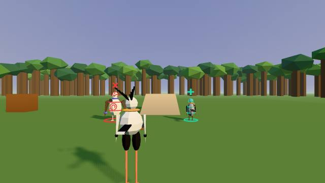
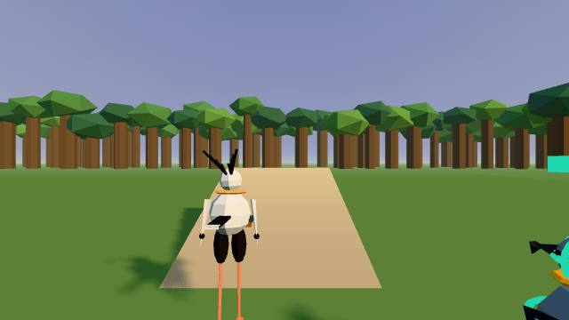
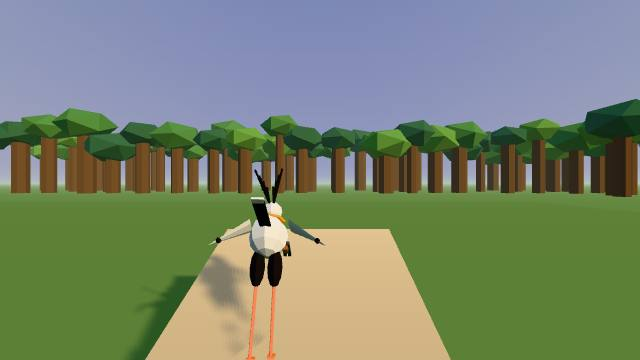

Secretarybird Playable
Mobility skirmisher · Playable since Stage 3
Appearance: the tallest, thinnest hero; legs are 60% of its height, with black "breeches" on the thighs; a crest of long black quills fanned behind the head; bare orange face. Pale grey body. Reads as "stilts with a quill crown".
How to play
Skirmishers live on movement. Dash in, trade a few shots or hits, and dash out. Use the lanes' Updrafts and rooftops to keep the initiative.
Secretarybird fights with the Quill Pair, which hits instantly. Damage drops off between 14 m and 32 m, and head hits are beak shots worth ×1.65. Every level above 1 is a Molt: +36 max HP per level; +3% gun damage of base per level; +1 Song power per level; +3 melee damage per level.
Kick, dash and stamp in sequence. Each move feeds the next, so chain them rather than using them alone. Keep a stamina pip for escaping.
Abilities
Four abilities. Slots 1 to 3 unlock at level 1, the ultimate at level 6. Each can be upgraded three times, for 1, 2, 5 AP, in order; see Ability Points. The shortest cooldown in the kit is Stomp Kick at 9 s.

1. Stomp Kick
Kick a 3.5 m, 60 degree cone: 80 + 0.8×SP Song damage and 7 m knockback. A target that hits a wall is stunned 1 s. Spends all Footwork stacks for +20% damage each.
- Tier 1 · 1 AP+25 damage (105 + 0.8×SP) damage +25
- Tier 2 · 2 AP-2 s cooldown cooldown -2 s
- Tier 3 · 5 AP2 charges +1 charge

2. Long Stride
Dash 10 m along your movement keys (forward if none) in 0.25 s, passing through units. Enemy heroes you pass are slowed 25% for 1.5 s and give 1 Footwork.
- Tier 1 · 1 AP+1 charge (3) +1 charge
- Tier 2 · 2 AP-3 s cooldown cooldown -3 s
- Tier 3 · 5 APEach dash gives +30% fire rate for 3 s

3. Snake Stamp
Leap to a point within 15 m. The landing deals 100 + 0.9×SP Song damage in 4 m and slows enemies 40% for 1.5 s.
- Tier 1 · 1 APLanding radius +1 m (5 m) radius +1, slow r +1
- Tier 2 · 2 AP-3 s cooldown cooldown -3 s
- Tier 3 · 5 APStuns 0.6 s instead of slowing slow r -5, stun r +5
4. Viper Dance
Lock onto an enemy hero within 6 m for 2 s: 6 kicks of 40 + 0.35×SP Song damage, each stunning 0.35 s; the last knocks back 10 m. You are unstoppable and stay on the target. It ends early if the target dies or turns intangible.
- Tier 1 · 1 AP+2 kicks in the same 2 s (8) kicks +2
- Tier 2 · 2 AP-20 s cooldown cooldown -20 s
- Tier 3 · 5 APThe last kick resets Long Stride and gives 3 Footwork
Since Stage 3. See all heroes.